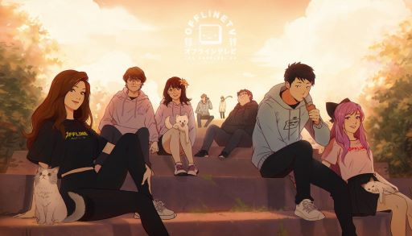

I'm absolutely engrossed in the Star Wars Universe. I've watched numerous videos explaining the extended lore through the comics, video games, and TV shows. I'm currently watching Ahsoka! If you haven't watched Star Wars content recently, I highly recommend Andor. The picture above is taken from one of the scenes.
In my spare time, I like watching YouTube, particularly content from Offline TV (OTV). They're a group of streamers that do different activities together beyond gaming in their streams.